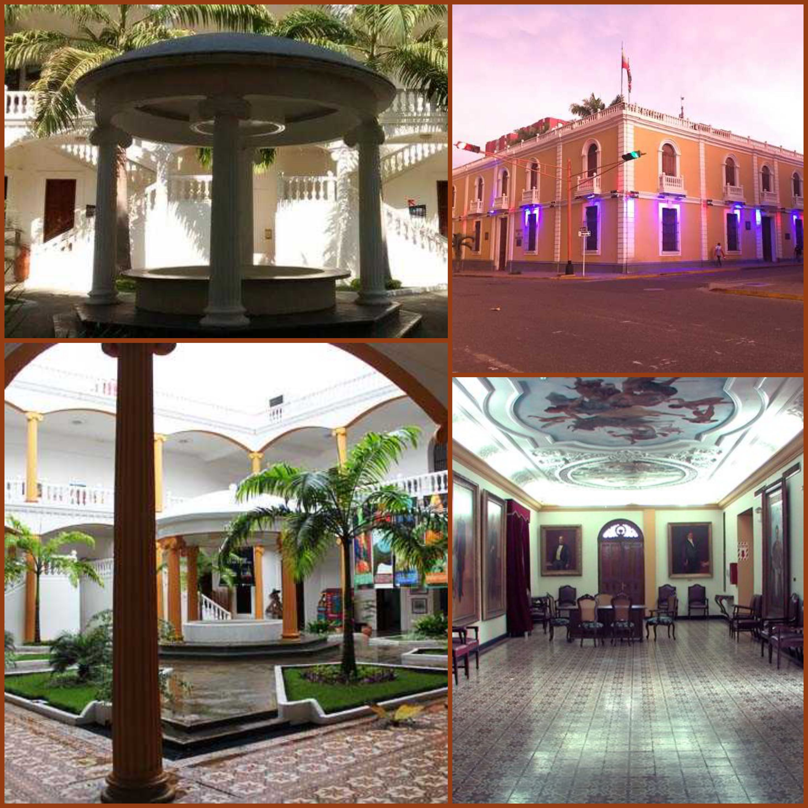
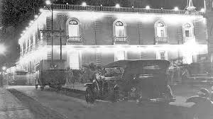

SU ARQUITECTUCTURA
Es una construcción de dos plantas, losa plana y ladrillo cocido que en la actualidad presenta 12 balcones de los 14 que existían originalmente, esto producto de una modificación realizada bajo la administración de la Sra. Dorila Parra de Orellana en el período 1975-1977, por la ampliación de la carrera 19. Este es un edificio de porte francés, moderno y vanguardista con una fachada ornamentada con elementos de relieve al mejor estilo Art-Deco y el Art-Nouveau.
Actualmente tiene una plaza con jardines y cominerías que desembocan al centro en una glorieta donde pueden reposar y disfrutar del sonido del agua de su fuente quienes visitan este mágico lugar, el patio central cuenta con varias columnas de relieves lineales y arcos rebajados. El acceso a la planta alta es dado por dos escaleras en forma de “Y” al estilo francés, elemento característico de los palacios y construcciones históricas de Europa, este segundo piso está decorado por una serie de arcos de medio punto, sostenidos por columnas corintias.
Desde su inauguración, adicional al despacho del Gobernador Eustóquio Gómez en 1933, se instala en el salón Martín María Aguinagalde, la Corte Suprema de Justicia, la Secretaría General de Gobierno, los tribunales de Catedral y Concepción y otras oficinas gubernamentales del estado Lara. En el año 1952, en este mismo salón, se instalan tres frescos realizados por el pintor inglés Walter Berk, en el que se integran el idealismo político, apuntando a escenas que simbolizan la identidad cultural, los frutos de la tierra y la diversidad de sus habitantes.
HISTORIA
Más de Ochenta años han pasado desde que por primera vez, el Palacio de Gobierno, abrió sus puertas a la formación, las artes y hasta la política, en una ciudad que se ha caracterizado por sentirse siempre orgullosa de su idiosincrasia, su música y todos los elementos que confluyen para edificar a los larenses, un lugar donde se ha escrito y se sigue escribiendo la historia de nuestra región.
Su construcción se inició durante la presidencia de Cipriano Castro en 1905, que motivado a problemas políticos y su salida del gobierno, la obra se paralizó en el año 1908. Durante 21 años, la que sería la casa oficial donde funcionaría el gobierno del estado Lara, quedó como un proyecto a medio comenzar.
No fue sino hasta 1929, con la llegada de Don Eustoquio Gómez, bajo la dirección del ingeniero francés Rolan Coutrox, que se reactivó la obra y logran culminarla para el 19 de diciembre de 1933, momento en el que comienza la historia viva del Palacio. Con un gran baile inaugural al que asistieron, políticos, personas de la alta sociedad y personajes influyentes de la región, se realizó su apertura, en marco de la conmemoración de los 25 años en el poder del Gral. Juan Vicente Gómez, contando con la participación de la emblemática Orquesta Mavare.
Esta edificación, fue decretada Patrimonio Artístico e Histórico del estado Lara, durante el mandato del Dr. Enuman Suárez y para el 20 de febrero de 2005 es declarado Patrimonio cultural de la Nación por el I.P.C (Instituto de Patrimonio Cultural), razón por la cual, en 2009 el gobernador Henri Falcón, decide restaurarlo y posteriormente abrirlo al público como atractivo turístico y centro de formación, arte y cultura de Lara.